Everyone
Signing in
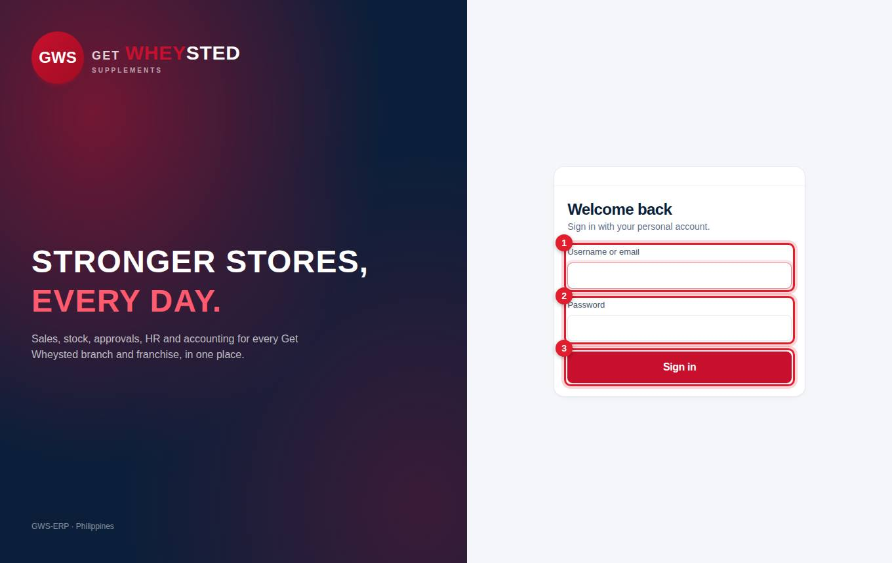
- Type your own username (never share it).
- Type your password. The first time, you choose a new one and accept the accountability statement.
- Press Sign in.
The dashboard and the menusigned in as sales.westave
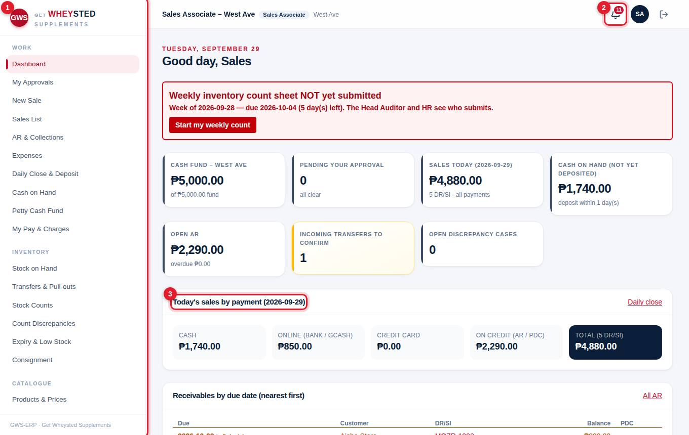
- The menu on the left lists only the screens of your role. Each screen tells at the top what it is for.
- The bell shows new notifications (approvals, reminders, decisions). Click one to open the document.
- The dashboard shows what needs you today, for example today's sales by payment and the cash on hand.
Help & Guidesigned in as sales.westave
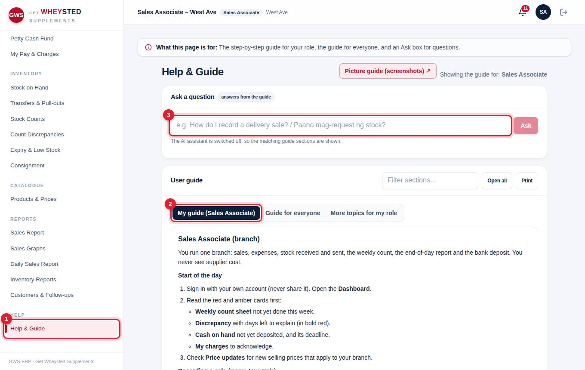
- Open Help & Guide from the menu.
- My guide has the step-by-step guide for your own role.
- Type a question in the Ask box.
Sales Associate
Recording a salesigned in as sales.westave
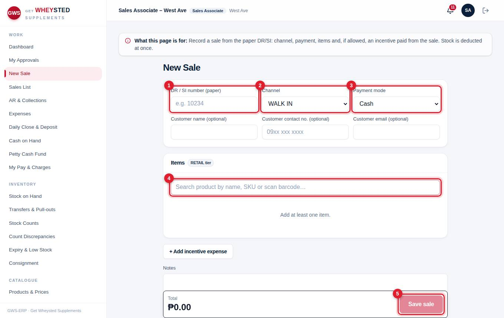
- Type the DR / SI number from the paper receipt.
- Choose the channel (walk-in, delivery, dealer…).
- Choose the payment mode: cash, online, credit card or on credit (AR / PDC).
- Type the product name or scan the barcode, then the quantity.
- Press Save. Stock is deducted at once.
Selling on credit (AR) and PDCsigned in as sales.westave
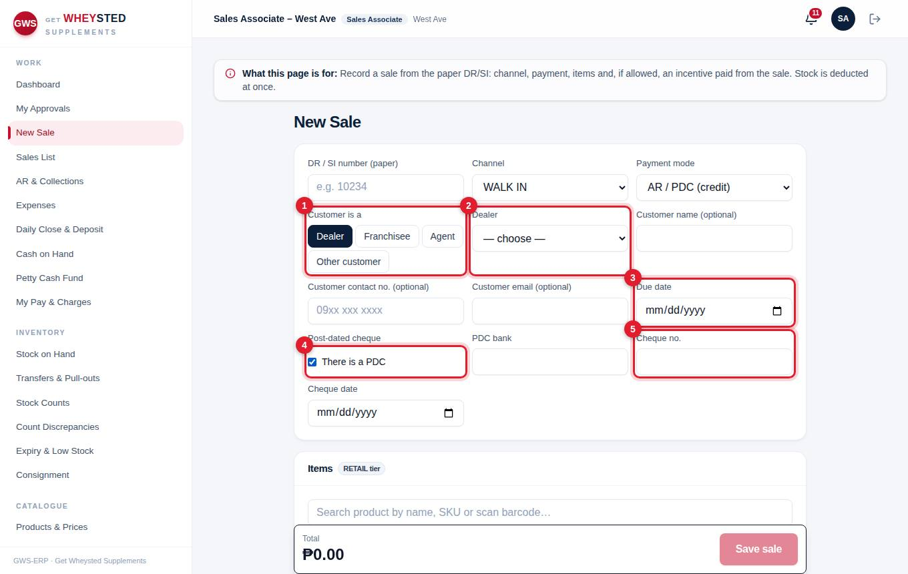
- Choose what the customer is: Dealer, Franchisee, Agent or Other customer.
- Only that kind of customer is listed. Pick the customer.
- Type the due date.
- Tick There is a PDC only when the customer gave a post-dated cheque.
- Then type the bank, cheque number and cheque date.
Expenses paid from the cash on handsigned in as sales.westave
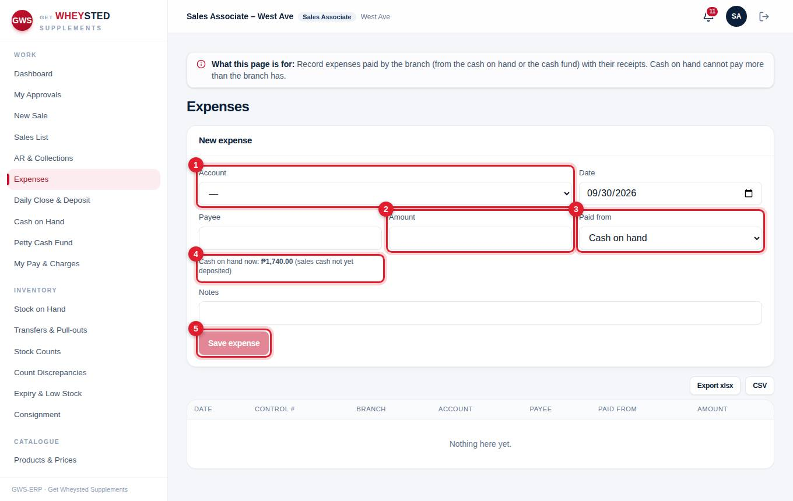
- Choose the expense account (for example Meralco).
- Type the amount and the payee.
- Choose Cash on hand (sales cash not yet deposited) or Cash fund.
- The screen shows how much cash on hand the branch has.
- Press Save expense, then attach the receipt.
Not enough cash on handsigned in as sales.westave
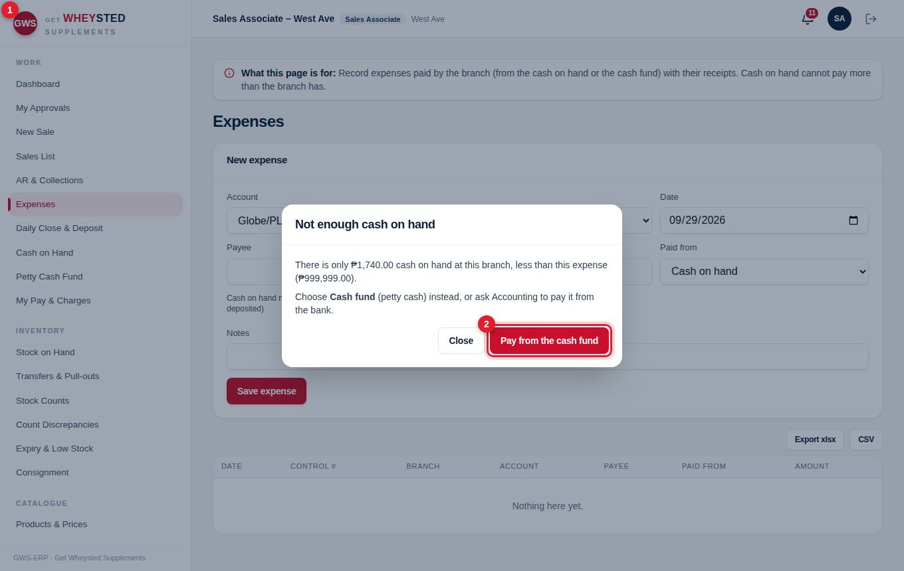
- If the expense is more than the cash on hand, this notice pops up and nothing is saved.
- Pay it from the cash fund instead, or ask Accounting to pay it from the bank.
Receiving stock from the warehousesigned in as sales.westave
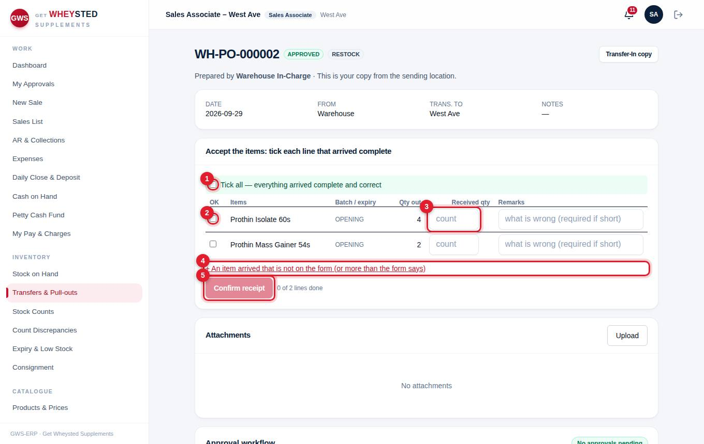
- If everything arrived complete, tick Tick all.
- Otherwise tick each line that arrived complete…
- …and for a line that did not, type the quantity you actually got and what is wrong.
- An item that arrived but is not on the form: press this and add it.
- Press Confirm receipt. A difference goes to the Head Auditor automatically.
Following a difference on a transfersigned in as sales.westave
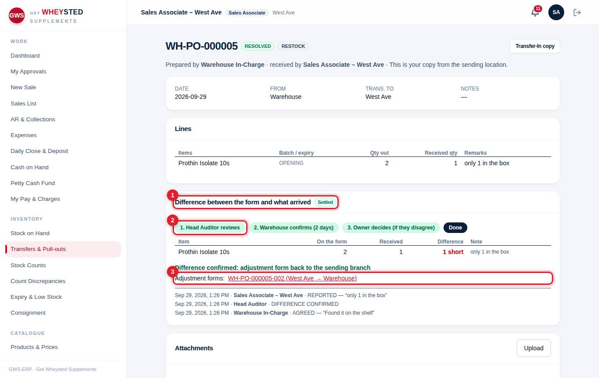
- The transfer page shows the difference: on the form, received, short or extra.
- The steps: Head Auditor → sending branch (2 days) → Owner if they disagree.
- When settled, the -002 adjustment form returns the missing items to the sender.
Collecting a customer payment (AR)signed in as sales.westave
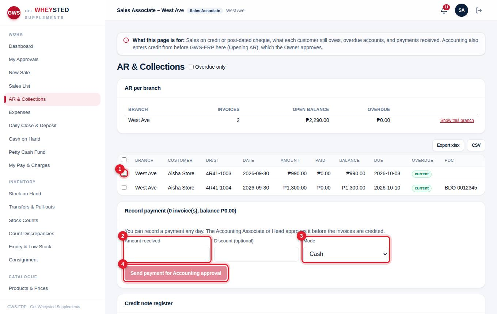
- Tick the invoice(s) of the customer who paid.
- Type the amount received.
- Choose how it was paid. For online and card payments choose the account and upload the proof.
- Send it. Accounting approves it before the balance goes down.
Submitting the Daily Sales Reportsigned in as sales.westave
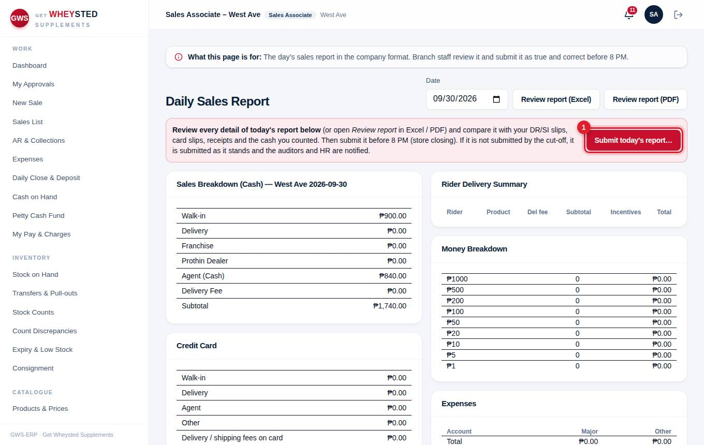
- At the end of the day, check the report and press Submit today's report. Tick "true and correct" and confirm. The day then closes.
Opening the document behind a stock movementsigned in as sales.westave
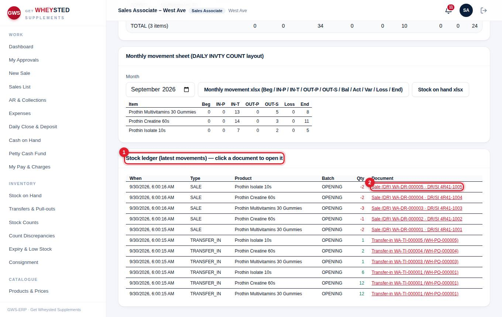
- In Inventory Reports, the stock ledger lists every movement.
- Click the document (Sale DR, Pull-out, Transfer-in…) to open it.
Warehouse Associate
Receiving a supplier deliverysigned in as wh.assoc
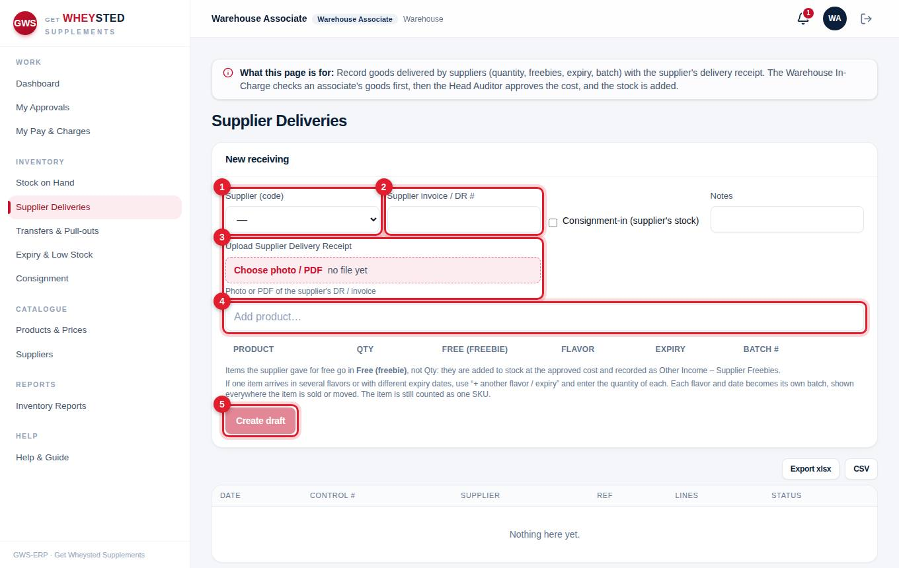
- Choose the supplier (by code).
- Type the supplier's invoice / DR number.
- Upload Supplier Delivery Receipt: a photo or PDF of the supplier's DR.
- Add each product with quantity, freebies, expiry and batch.
- Press Create draft, check it and submit. The In-Charge checks the goods first, then the Head Auditor approves the cost; the stock is then added.
Warehouse In-Charge
Answering a difference your warehouse sentsigned in as wh.incharge
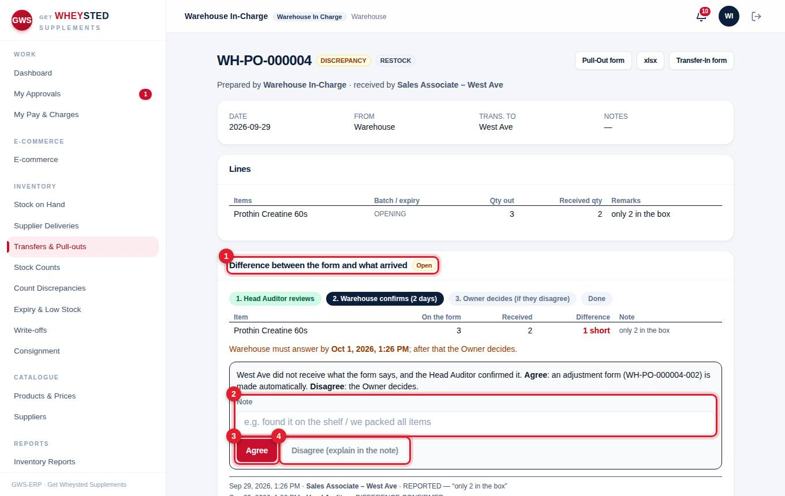
- The receiving branch got less than your form, and the Head Auditor confirmed it.
- Check your shelves and packing and type what you found.
- Agree: the -002 adjustment form is made automatically.
- Disagree: the Owner decides. Answer within 2 days.
My Approvalssigned in as wh.incharge
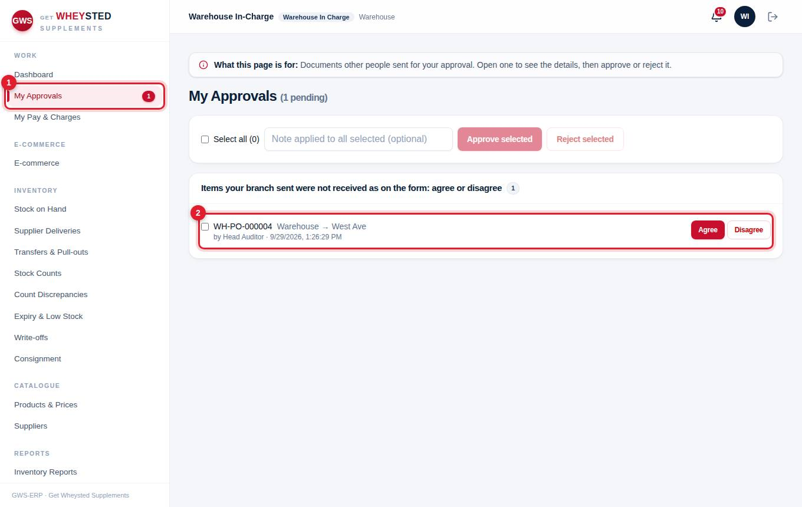
- Everything waiting for you is in My Approvals: your associates' goods in and out, e-commerce pull-outs and transfer differences.
- Click a line to see the details, then decide. A transfer difference your warehouse sent shows Agree / Disagree (a reason is required to disagree).
Head Auditor
Reviewing a transfer differencesigned in as head.auditor
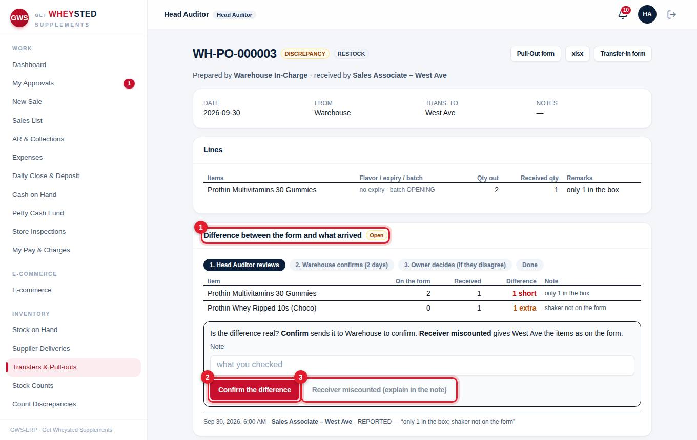
- The table shows what was on the form, what was received and the note.
- Confirm the difference: it goes to the sending branch to agree.
- Receiver miscounted: the receiving branch gets the items as on the form.
Cash on hand of every branchsigned in as head.auditor
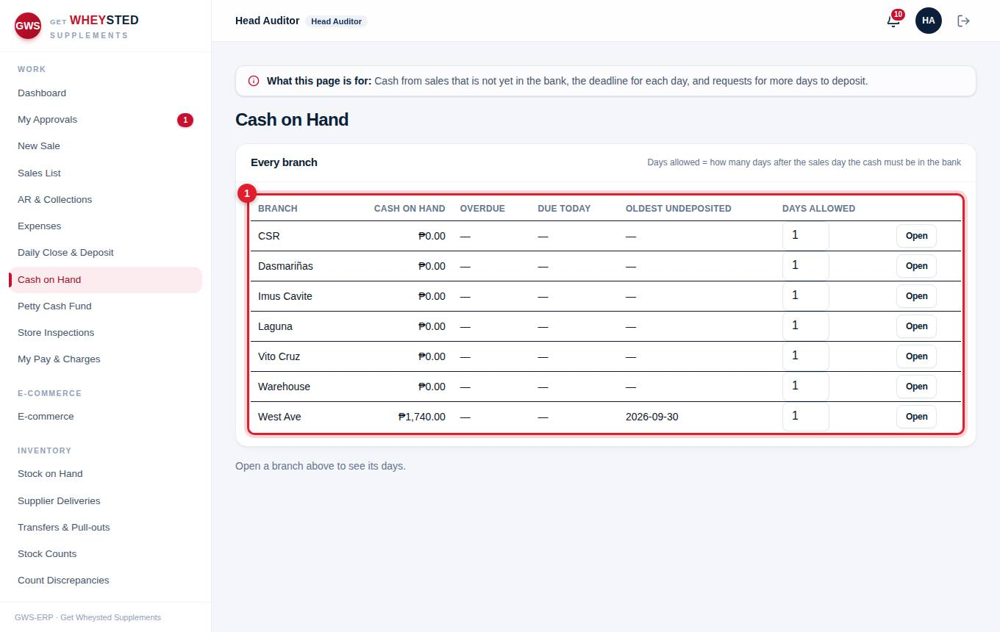
- See each branch's undeposited cash and deadlines, and set the days allowed to deposit.
Accounting Head
Approving an AR paymentsigned in as acct.head
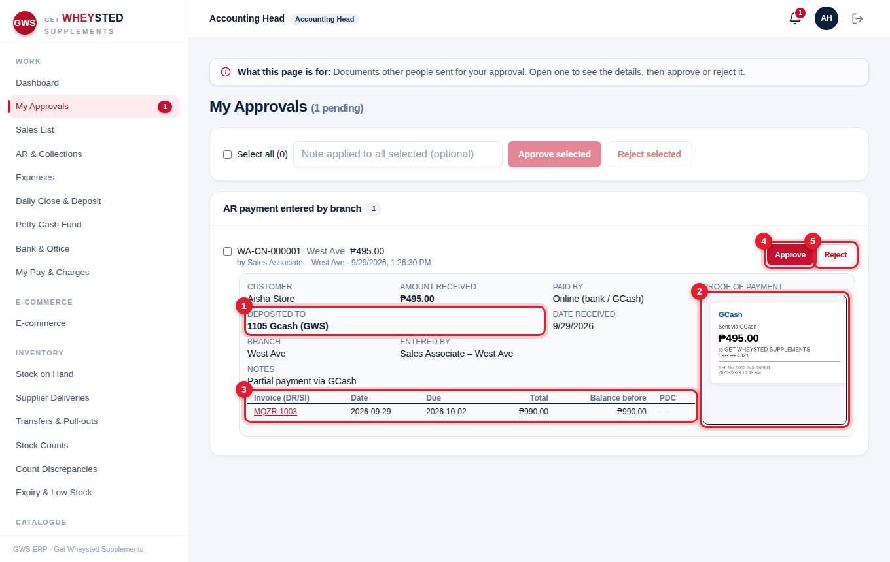
- See the account it was deposited to, the amount and how it was paid.
- The proof of payment is right there; click it to enlarge.
- The invoices being paid.
- Approve when the money is in the account.
- Reject asks for the reason.
Rejecting with a reasonsigned in as acct.head
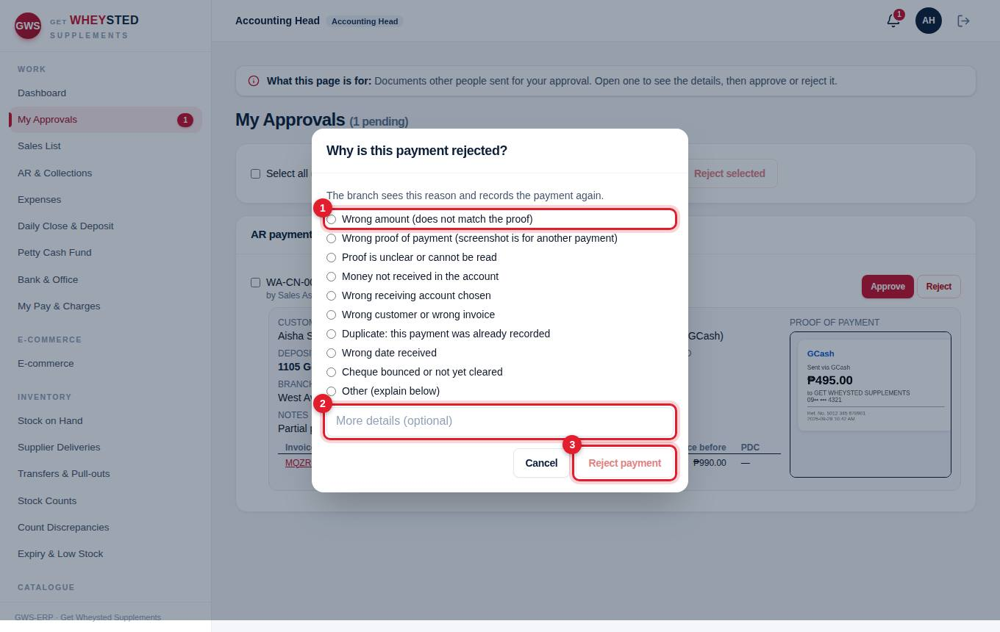
- Choose the reason: wrong amount, wrong proof, proof unclear, money not received, wrong account, wrong customer or invoice, duplicate, wrong date, cheque bounced, or other.
- Add details if needed.
- Press Reject payment. The branch sees the reason.
HR Staff
Transfer differences in HR Noticessigned in as hr.staff
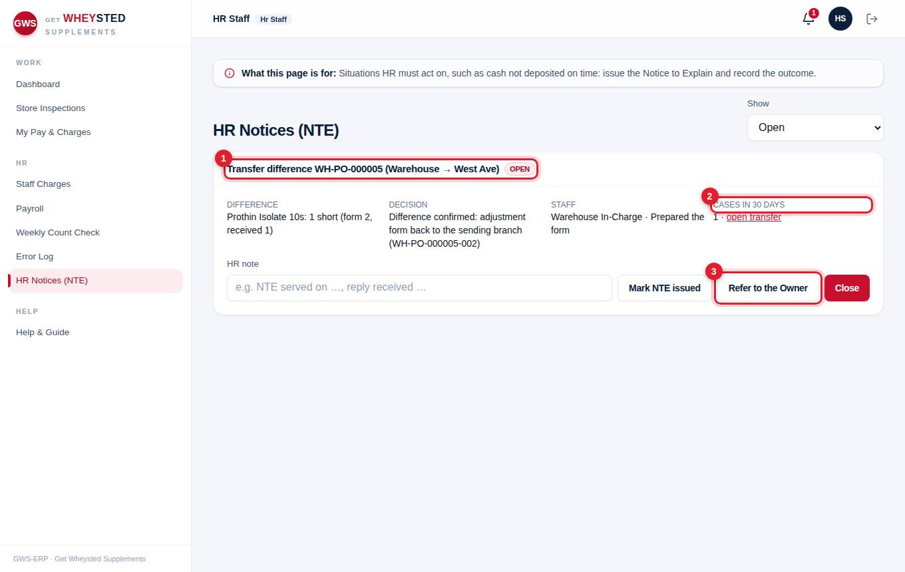
- Every confirmed transfer difference comes here with the person answerable.
- The number of cases in 30 days; from the third it is marked in red.
- Refer to the Owner for a more serious consideration.
Sales Manager
Setting and following sales targetssigned in as sales.manager
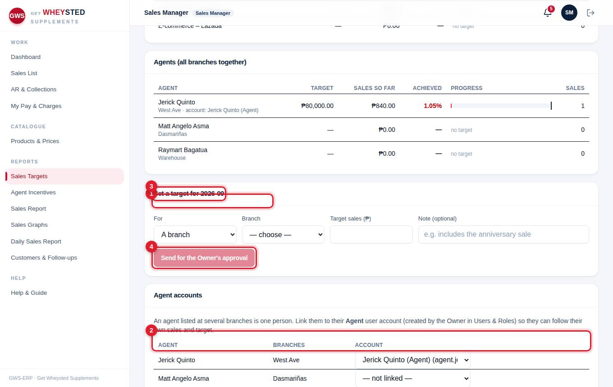
- Each branch (and e-commerce platform) with its target and sales so far.
- The bar shows % achieved; the dark line is how much of the month has gone. Green = on track.
- To set a target: choose the branch or agent and type the amount…
- …and send it. The Owner approves it.
Agent
My Salessigned in as agent.jerick
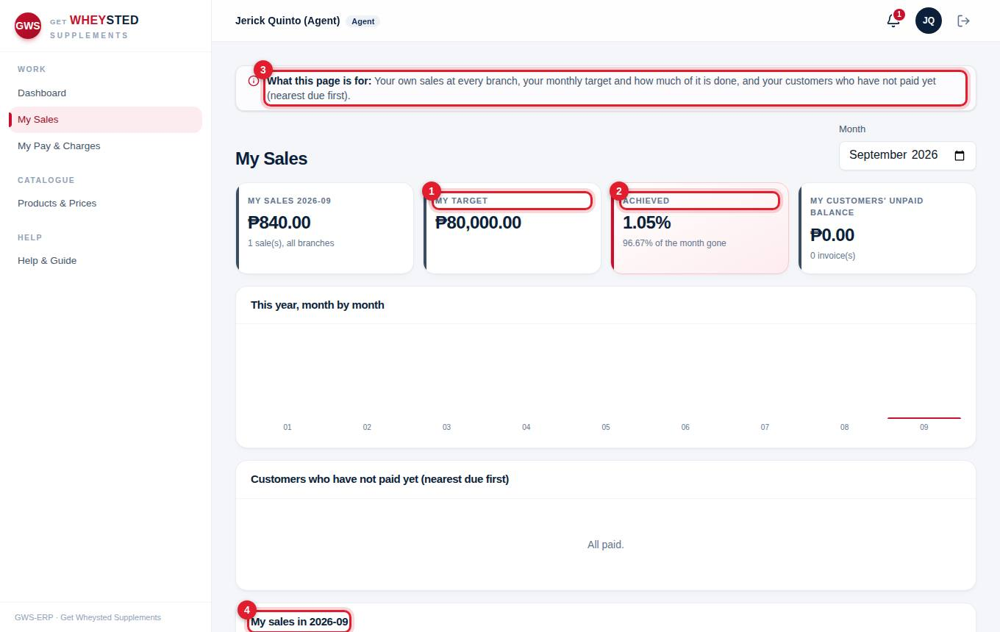
- Your target for the month.
- How much of it is done (green = on track).
- Your customers who have not paid yet, nearest due first.
- Your sales at every branch.
Owner (Admin)
Approving targets and other requestssigned in as admin
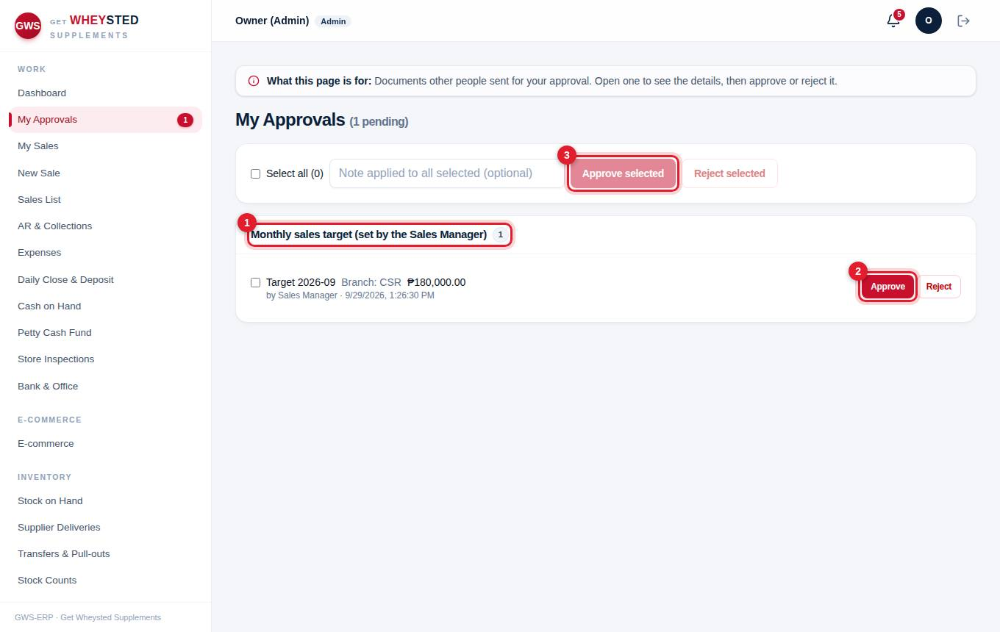
- Requests are grouped by type, for example the Sales Manager's targets.
- Approve (or reject) one…
- …or tick several and use Approve selected.
Creating a user accountsigned in as admin
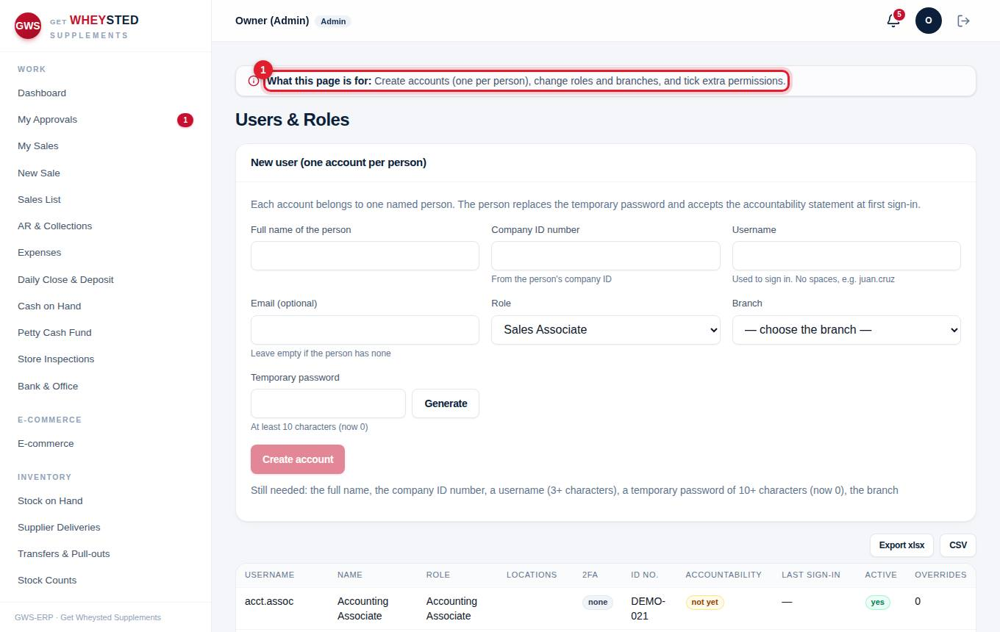
- In Users & Roles, create one account per person: username, full name, company ID, role and branch. Press Generate for a temporary password.
Made from the demo accounts (password ChangeMe!2026). Your screens show your own branch and data. For every detail, see Help & Guide inside GWS-ERP.